Tagged: Transcription
Transcription: “Like Eating Glass” — Matt Tong with Bloc Party
Posted on February 13, 2022
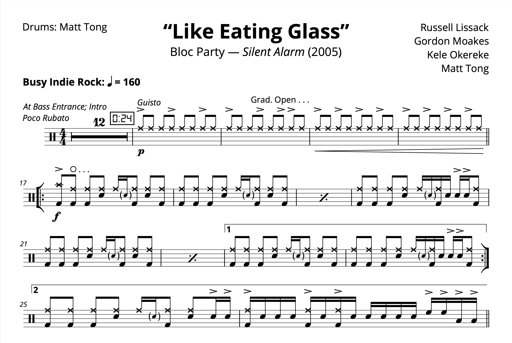If the Niners had made it to the Super Bowl, I may have taken the week off, although lately, I’ve been getting my sports fill from the Olympics anyway.
Today, I’ll add to my eclectic (and admittedly haphazard) collection of transcriptions. I have a WIP of a torch song from the 70s, but I couldn’t finish it in time for Valentine’s day weekend. This song at least has some romantic tinges to it. Read More . . .
Transcription: “No Return” (Theme From Yellowjackets) — Craig Wedren and Anna Waronker
Posted on January 16, 2022
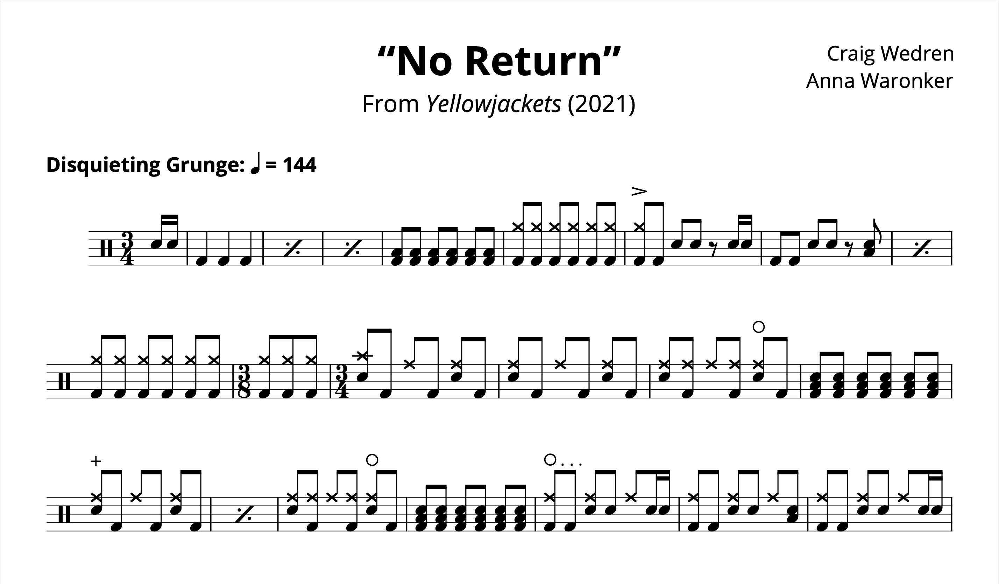This is an unusual topic, but today we’re talking about the theme music for the recently premiered TV show Yellowjackets. I don’t know much about the show, except that it has something to do with a group of high school soccer prodigies who get involved in a plane crash, as well as their adult lives after the fact. Pretty interesting I guess; almost as interesting as the theme music! Read More . . .
Transcription: “In Color” — Patrick Hallahan with My Morning Jacket
Posted on December 19, 2021
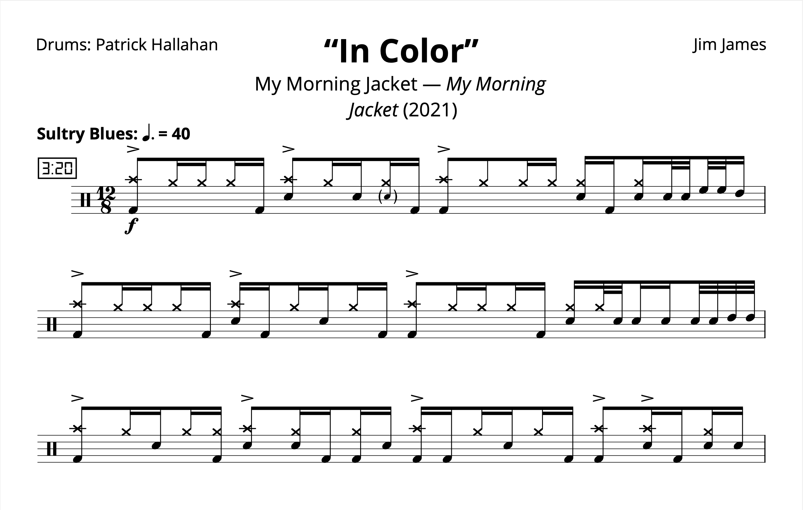I don’t give myself lot of opportunities to talk about music that’s hip and contemporary. For one, it takes time to evaluate whether or not a piece of music is really worth dissecting. I am also reminded of a scene from the TV show Bosch where the titular character has a conversation with his friend where his comrade says something to the extent of, “Why don't you listen to music from this century?”, to which Bosch replies, “Because I'm still getting caught up on the last one!”. Something like that anyway. Read More . . .
Transcription: “Amazing Journey” — Keith Moon with The Who
Posted on September 3, 2021
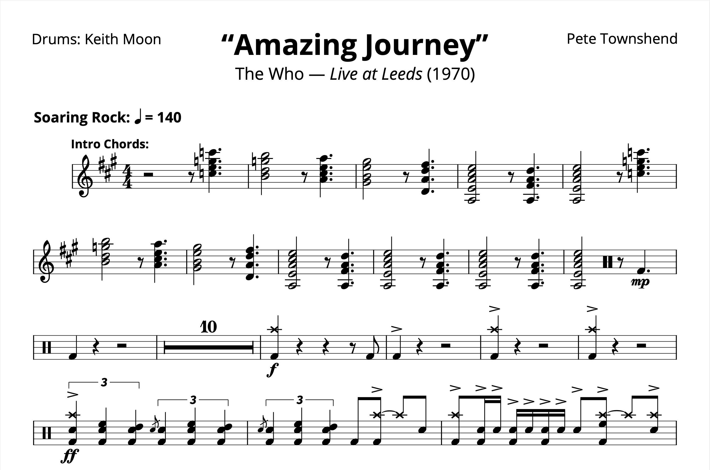Ever since I wrote about Charlie Watts and Get Yer Ya–Ya’s Out! last week, I’ve been on a bit of a classic rock kick, especially with live albums. And so this week, I’m finally going to talk about Live at Leeds.
It’s hard to fully explain the impact this album has had on me as a drummer. Keith’s playing on this record is just out of this world. Keith is often regarded as a zany, fly–by–the–seat–of–his pants kind of player. But the closer attention I’ve paid to his drumming, the more I’ve appreciated his nuances, as well as how he navigated the arrangements with the rest of the band. Read More . . .
Charlie Watts (1941–2021) + Transcription: “Midnight Rambler” — Charlie Watts with the Rolling Stones
Posted on August 29, 2021
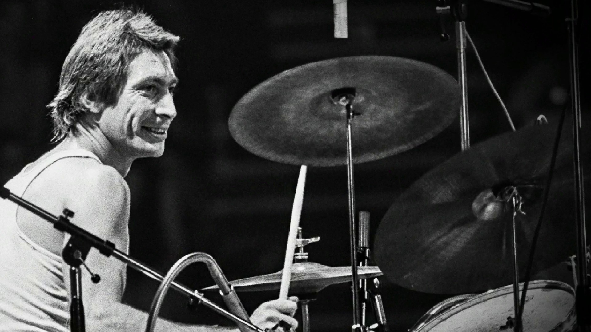Well, it seems by now that everyone in the music world has paid their respects to Charlie Watts after his recent passing at the age of 80. The cause of death is not known at the moment; Charlie had a recent heart procedure at the start of August, but he was otherwise reported to be in good health. Read More . . .
Transcription: “Aftermath” — Tom Pitts with Rolo Tomassi
Posted on July 18, 2021
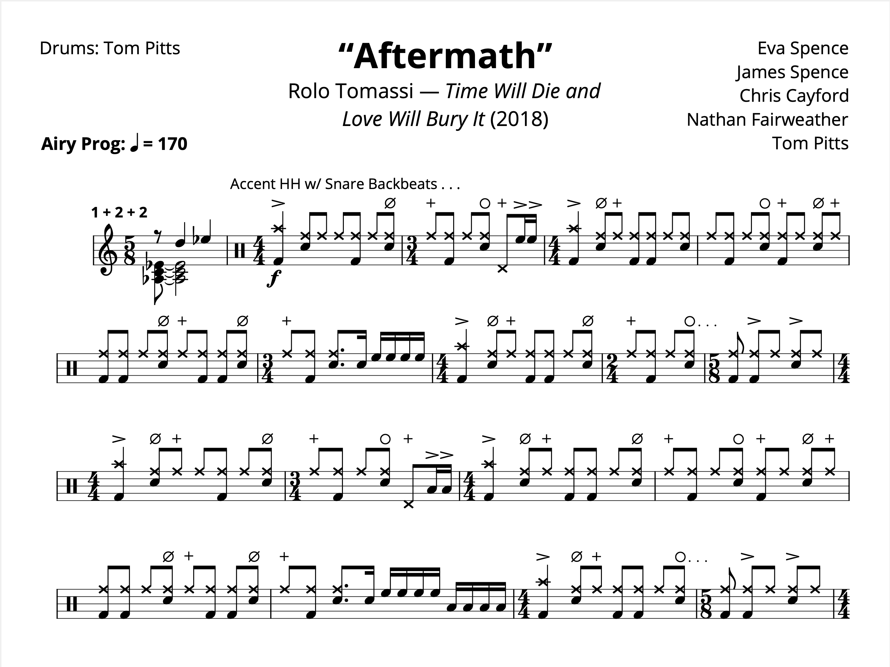Rolo Tomassi was recommended to me a few years ago, sometime after their album Time Will Die and Love Will Bury was released. The song Apple Music gave to me was “Aftermath”, and I really dig the tune. It’s got some rather ethereal verses and a very powerful ending. However, I soon discovered afterward that I had fallen victim to a bit of a bait and switch since most of the band’s catalog consists of some gnarly music with harsh vocals.
Whatever, this song’s still great. I want to use it as an opportunity to talk more about mixed meter playing since I haven’t written about it much; that is to say, songs that change time signature very often. Read More . . .
Transcription: “Lycanthrope” — Travis Barker with +44
Posted on July 11, 2021

When I was a freshman in college, I had to deal with the debacle of iCloud and Apple Music destroying my music library. In the midst of that, I rediscovered +44’s one and only album, When Your Heart Stops Beating. +44 was cooked up by Mark Hoppus and Travis Barker after their previous band Blink-182 broke up for the first time. I don’t really remember this album getting released; I think the first time I heard it was around 2007–08. Apparently, it was highly anticipated, so maybe people thought +44 would be the next Blink-182. Read More . . .
Transcription: “Ten Years Gone” — John Bonham with Led Zeppelin
Posted on June 13, 2021
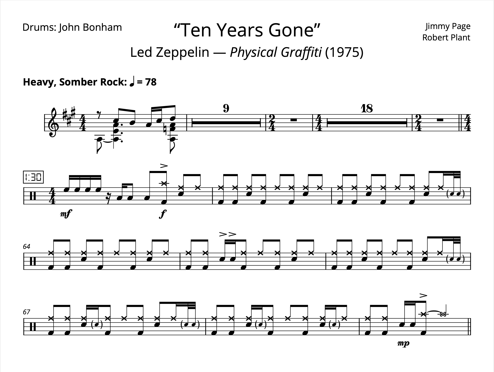I probably have 12 or so full–length transcriptions laying around in a WIP folder that I haven’t shared yet, and I’m not really sure if I ever will. At least not in their current form, since note–for–note drum sheet music for an entire track often isn’t necessary. But today, I decided to share my interpretation of Led Zeppelin’s “Ten Years Gone”. I know, a full song! How exciting.
Like “How Many More Times”, this was a Zeppelin song that escaped me for a few years after I first got into the band. I really never gave this track a proper listen until right after I graduated high school. And I must say, the tune is one of Zeppelin’s most engaging and emotional. Read More . . .
Transcription: “Voodoo Chile” — Mitch Mitchell with Jimi Hendirx
Posted on June 6, 2021
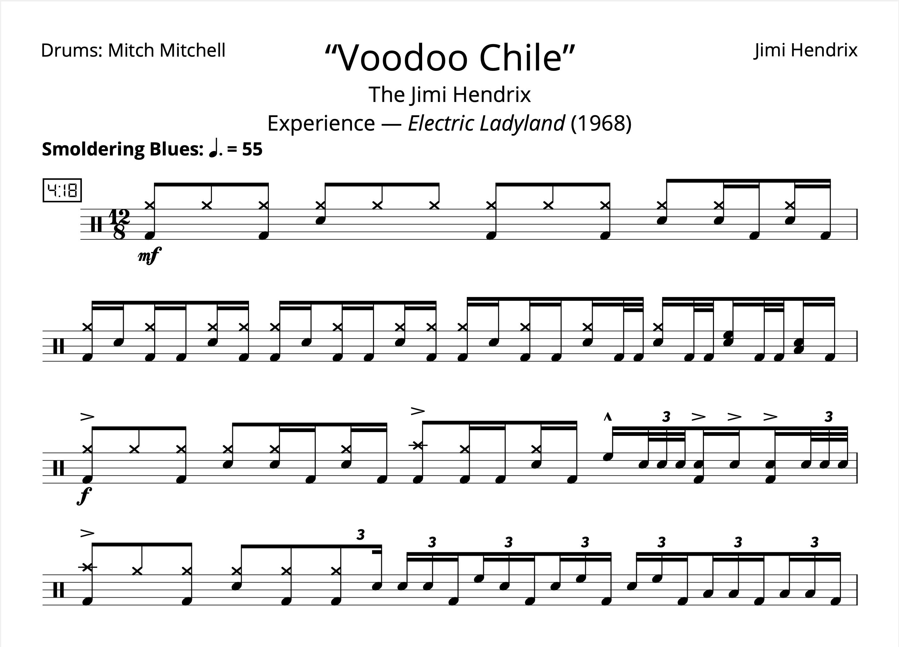Now that it’s finally warming up, it’s time for some Jimi. I probably shouldn’t let the weather dictate my musical tastes, since (conceptually) music should be able to exist as an artistic statement on its own… but I just don’t feel like listening to Hendrix when it’s snowing outside. I first got into Hendrix in the springtime when things were warming up, although after looking into it, I discovered that two of the three Experience albums (including this one) were released in the winter/fall.
Within different drumming circles, I don’t see the blues discussed much. Everyone wants to know how to play jazz or how to get fluent with double bass, but the blues often get overlooked these days. Read More . . .
Transcription: “Stars” — Ray Luzier with KXM
Posted on May 9, 2021
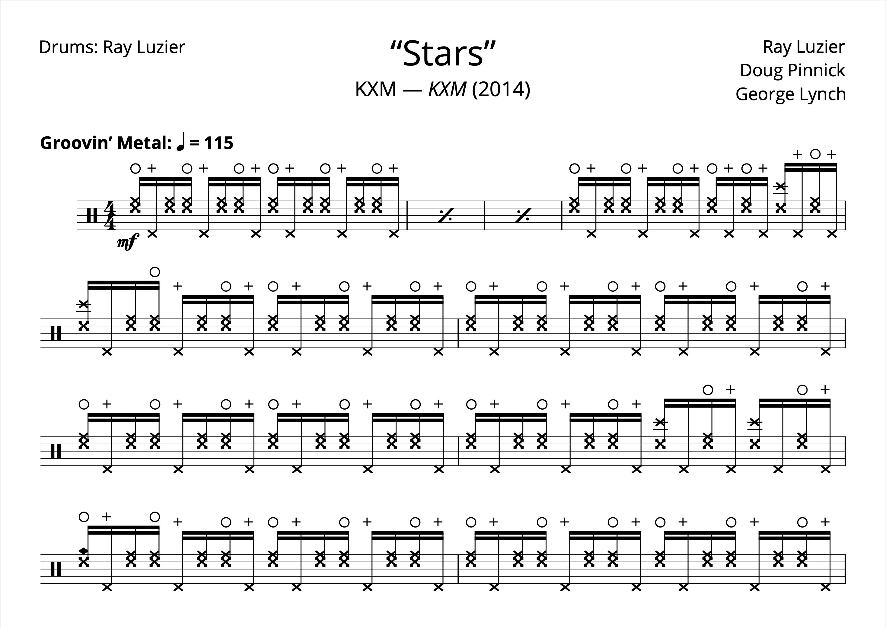I have a big list of drummers that I need to listen to more. In fact, for most of the drummers I know of, I have yet to fully explore and appreciate their discographies. When you first hear about an artist, you’re often not sure where to even begin. For many, the simple approach is to just punch something in on YouTube.
I feel a bit uneasy about doing that; in the case of drummers, you’re likely to get some live drum solo; however, I regard albums to be more musically important (i.e. drumming played on actual records). Read More . . .
Transcription: “Salt of the Earth” — Alex Rüdinger with Good Tiger
Posted on April 11, 2021

Alrighty, time for something a bit more interesting. I found this band about three years ago, when Apple Music recommended them to me. They had just released an album, and this track “Salt of the Earth” was chosen for a new music playlist. It caught my attention right away when it came on. While the band wasn’t familiar, I recognized the drummer Alex Rüdinger after I looked into the group. Alex has played music with a whole slew of bands, most of it being rather intense metal. Not usually my cup of tea, so I wasn’t very familiar with Alex’s playing at this point. Read More . . .
Transcription: “Rock and Roll” — John Bonham with Led Zeppelin
Posted on April 4, 2021
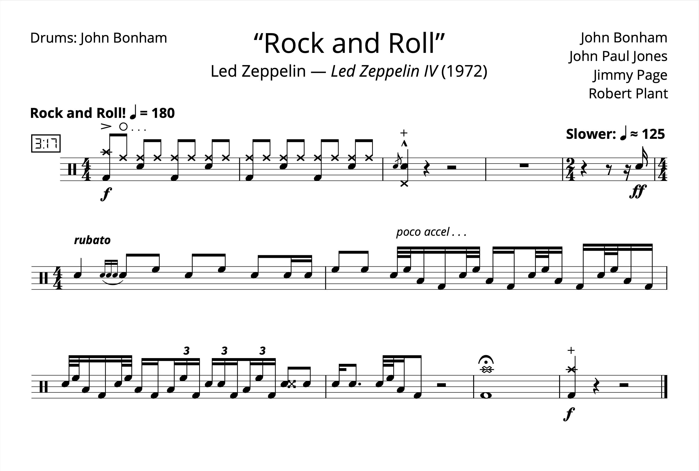Another sleepy post this week: I don’t have much to add about this tune, I just wanted to get my interpretation down on paper, since (surprisingly) there aren’t many transcriptions of this solo out there. Read More . . .
Transcription: “Jazz Crimes” — Tommy Igoe with The Tommy Igoe Groove Conspiracy
Posted on March 21, 2021
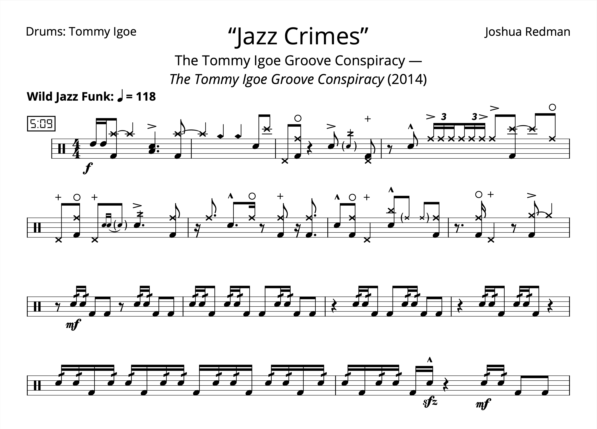Oh, Tommy Igoe… you probably have one of two opinions of him. For many, Igoe is the mastermind behind Groove Essentials and Great Hands for a Lifetime, which are adored pieces of eduction for many drummers. I’ve spent quite some time with both, and they’re no doubt ambitious and well done projects.
On the other hand, you might have a very different opinion of Tommy if you’ve ever browsed his socials, especially his Instagram page. In fact, I often see threads on Reddit from drummers talking about Tommy’s behavior on the internet. Read More . . .
Transcription: “F.C.P.S.I.T.S.G.E.P.G.E.P.G.E.P.” — Andrew Forsman with The Fall of Troy
Posted on March 14, 2021
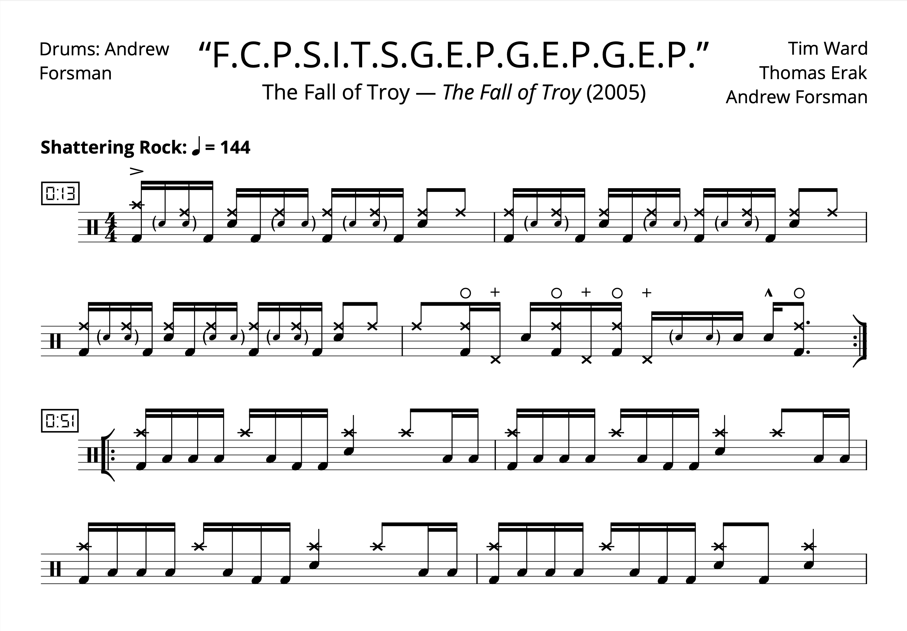Depending on how old you are, you may look at the name of this song and thing what the hell kind of band is this? Well, many folks in my generation (and thereabouts) were first introduced to The Fall of Troy via good old Guitar Hero:
I’ll be shocked if you watch more than 30 seconds of that. Read More . . .
Transcription: “Hey Joe” — Mitch Mitchell with Jimi Hendrix
Posted on March 7, 2021
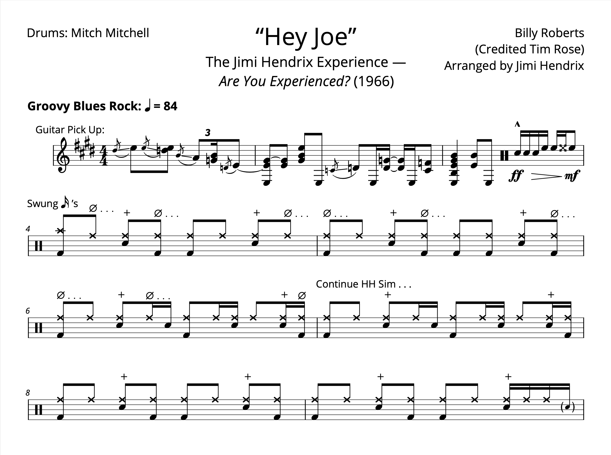Yeah, I should probably know better than to talk about “Hey Joe” in the 21st century. But there’s no denying that it’s an incredible song, despite the rather… disturbing lyrics.
There’s actually some interesting speculation online as to why Jimi decided to make his debut single a cover song about a man who murders his wife and tries to hightail it to Mexico. Discussions usually reference Jimi’s turbulent military service (e.g. being conscripted into the Army and basically kicked out of it) as possibly drawing him to a song about violence, betrayal, and freedom. I’ve even found comments about how the background vocals are meant to represent the ghost of Joe’s wife, haunting over him as he tries to cheat the gallows. Read More . . .
Transcription: “Hipsterminate” — Richard Kass with Thunkfish
Posted on January 31, 2021
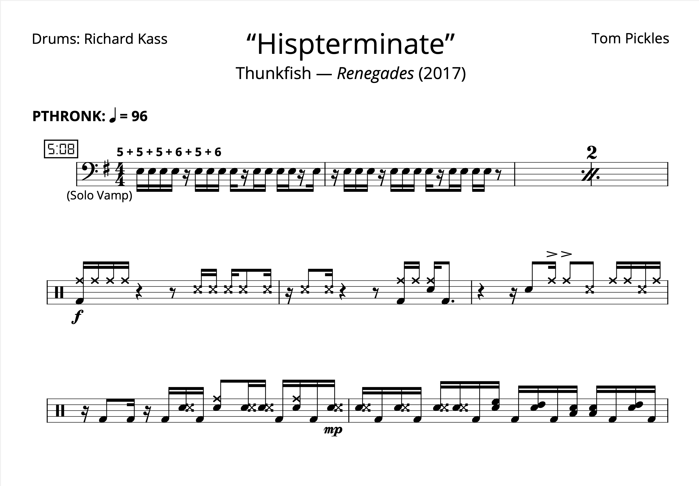There are deep cuts… and then there’s this. I told you I would be back with something interesting!
Over at r/drumming (a subreddit that’s basically the cooler relative of r/drums) someone asked for help in making sense of a drum solo in the tune “Hipsteriminate” by a band called Thunkfish. Read More . . .
Transcription: “Feeling This” — Travis Barker with Blink-182
Posted on Febuary 17, 2021

Yeah yeah, this song’s been done dozens of times, but I took a shot at it a few years ago and I figured I’d share it. “Feeling This” is often considered a modern day drumming classic — it’s not hard to see why. “Feeling This” is one of the best songs Blink-182 ever did; just listen to the ending vocals in isolation to see the band’s Studio MagicTM at work. Read More . . .
Transcription: “The New Year” — Jason McGerr with Death Cab For Cutie
Posted on January 3, 2021
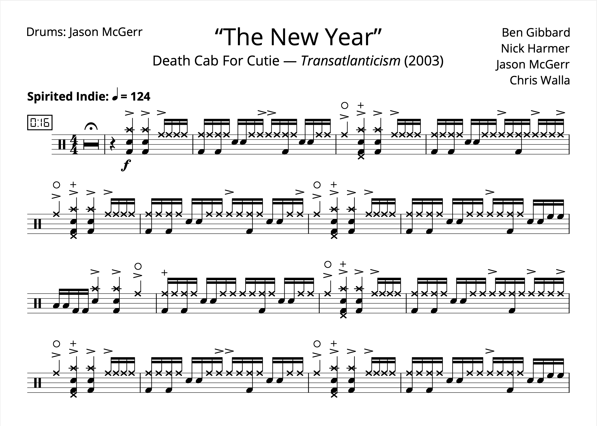I know we just looked at Jason McGerr back in November, but when else am I gonna share a song called “The New Year”? So then, I have some more Jason McGerr groovage for you. The tune is off of Death Cab for Cutie’s masterpiece Transatlaticism, an album so good even Pitchfork realized they had fucked up when they revisited the LP ten years later, bumping their original score from a 6.4 to an 8.4. Read More . . .
Transcription: “How Many More Times” — John Bonham with Led Zeppelin
Posted on December 27, 2020
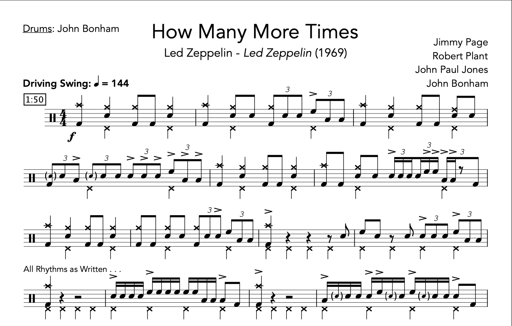Happy Holidays everyone! This week, I decided to share something I started a while back and have spent some time polishing up: fills and solos from “How Many More Times” off of Led Zeppelin’s debut album, with John Bonham on drums.
I think it’s appropriate to close out my first year on the site with this tune. The project was actually the first “big time” transcription of a song I ever attempted, starting way back in the summer of 2014. Read More . . .
Transcription: “Wind Machine” — Louie Bellson with The Buddy Rich Big Band
Posted on December 6, 2020
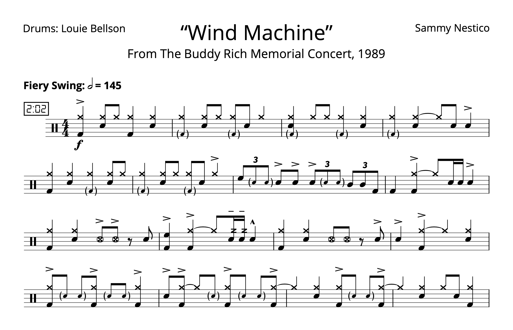At long last! It’s finally time to wrap up the Buddy Rich Memorial Concert posts. Louie Bellson takes us home with the tune “Wind Machine”, from the first half. I kind of went about these in a weird order — Steve Gadd and Gregg Bisonette were the first drummers I had worked on, so I ended up just alternating from the first and second halves. I guess it’s appropriate to call it a day with the oldest drummer who was there. Read More . . .
Transcription: “Mercy, Mercy, Mercy” — Dave Weckl with The Buddy Rich Big Band
Posted on November 29, 2020

This week, Dave Weckl will bring us the penultimate entry for these Memorial Concert posts. I must say, these posts have sure kept me busy. I feared I bit off a little more than I could chew when I got to Vinnie’s post, but now the end is in sight. Thank goodness I had some anniversaries halfway through to keep me from getting burned out. Read More . . .
Transcription: “Dancing Men” — Dennis Chambers with The Buddy Rich Big Band
Posted on November 22, 2020
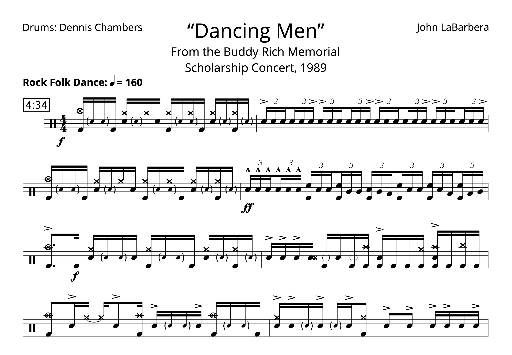Alright, it’s time to jump back into the Buddy Rich memorial concert — sorry for the brief hiatus. We’re gonna pick it back up with Dennis Chambers on the tune “Dancing Men”, played from the first half of the concert.
On my Vinnie post, I talked about how the drummers from that night all had slightly different interpretations of how fast to play the charts. Read More . . .
Transcription: “115” — Kevin Sherwood
Posted on November 8, 2020
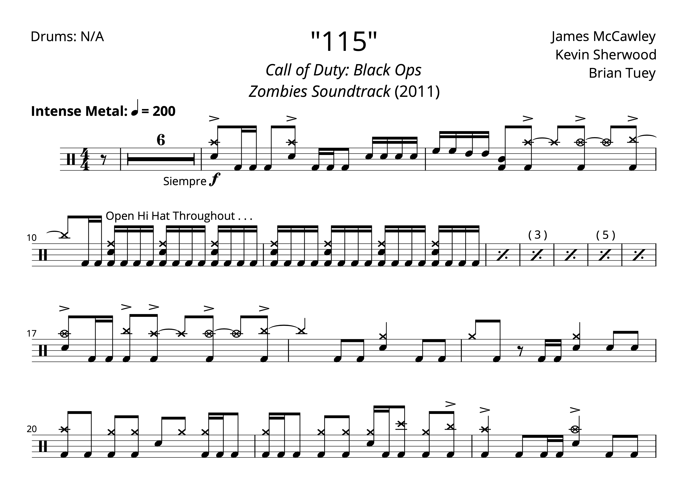So here’s something I have no business doing, but humor me for a moment:
One of my favorite games growing up was Call of Duty: Black Ops. Yeah yeah, I know… cringe all you want, but there’s no denying how much fun I had playing it. And now, Black Ops will turn ten years old tomorrow. Read More . . .
Transcription: “Ya Gotta Try” — Vinnie Colaiuta with The Buddy Rich Big Band
Posted on October 25, 2020

It’s time for Buddy Rich part 3: today, we’re jumping back to the second half of the concert with Vinnie Colaiuta on the tune “Ya Gotta Try”. “Ya Gotta Try” was one of Buddy’s favorites, and it was one of the more exhilarating charts played that night (along with “Time Check”). Read More . . .
Transcription: “Time Check” — Gregg Bisonette with The Buddy Rich Big Band
Posted on October 18, 2020
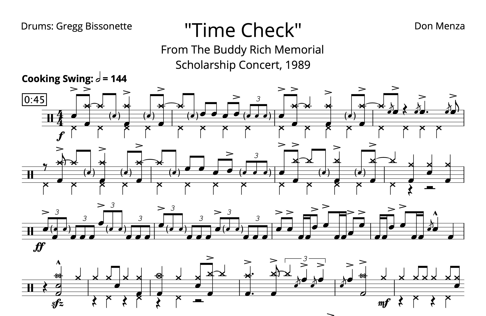This is part 2 of my posts concerning the 1989 Buddy Rich Memorial Scholarship concert. Today, we’re looking at Gregg Bisonette’s playing from “Time Check”. Gregg did a fantastic job that night; his playing on “In A Mellow Tone” swings harder than almost anything else from the show, and he goes very hard on this chart. Read More . . .
Transcription: “Keep The Customer Satisfied” - Steve Gadd with The Buddy Rich Big Band
Posted on October 11, 2020
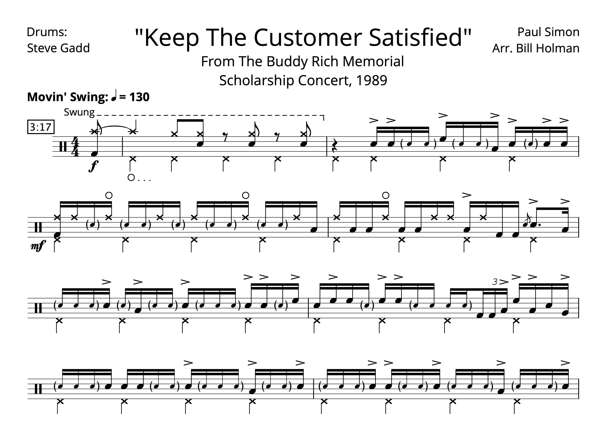This will be the first in a series of posts concerning the 1989 Buddy Rich Memorial Scholarship Concert, filmed in Los Angeles at the Wiltern Theatre. It’s a night that I consider to be one of the greatest moments in drumming history. Shamefully, it’s difficult to get a personal copy of the show; DVD’s haven’t been made since a limited run in 2006 (and as such are obnoxiously expensive), while only snippets are available on YouTube. Read More. . .
Transcription: “Story” — Brian Evans with Chon + A rant about music theory
Posted on October 4, 2020

This has been kicking around in my drafts folder for almost exactly one year — I guess now is as good of a time as any to share it with the world. So, last October I saw a post over on r/Drums where somebody asked about the Chon track “Story” off of their 2015 debut. The poster was asking about what was going on at the end of the tune, around the 3:10 mark. Read More . . .
Transcription: “Separate Ways (Worlds Apart)” — Steve Smith with Journey
Posted on October 4, 2020
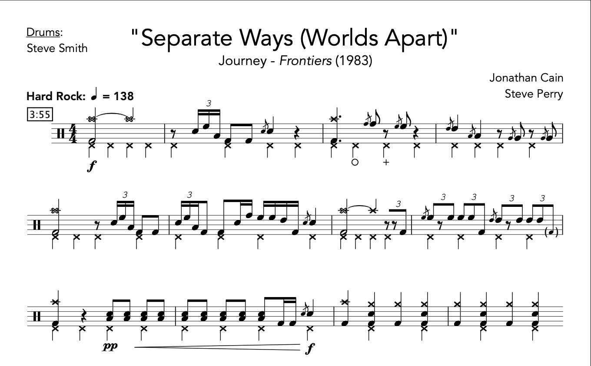Another low-key post for this week — I need to take it easy after "Eary Summer"! But in all seriousness, I do realize that I've looked a lot of intense stuff so far, so let’s calm down with some Steve Smith. Read More . . .
Transcription: “Early Summer” — Yoshinori Fukui with Ryo Fukui
Posted on September 20, 2020
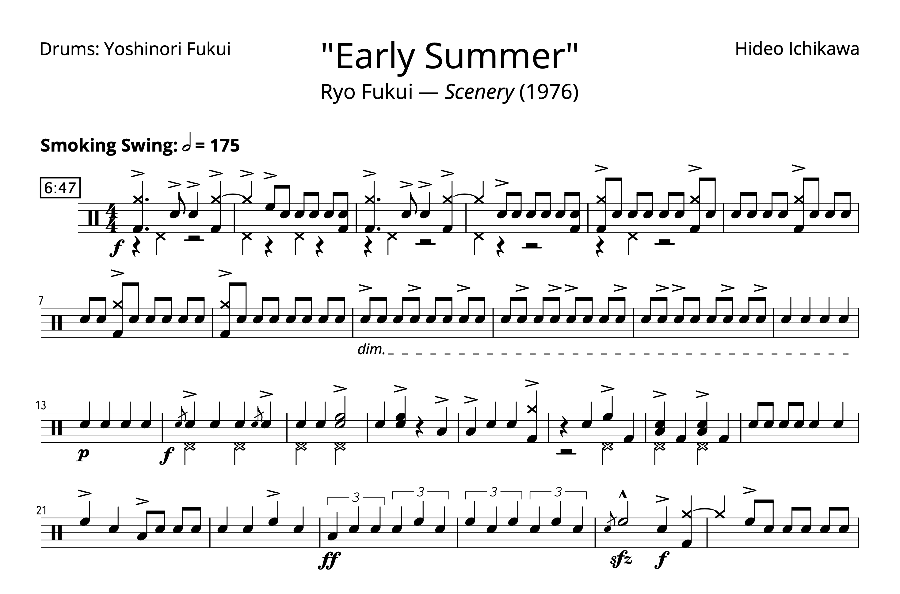Listen to the first 40 seconds of this:
What you’re hearing is a guy named Ryo Fukui (福居良). He began his life in music by playing the accordion (like all of us), and then at the age of 22 decided he wanted to be a jazz pianist. And after 6 years of self-taught instruction, he cut his first album, Scenery. Read More . . .
Transcription: “Behind Blue Eyes” — Keith Moon with The Who
Posted on August 30, 2020
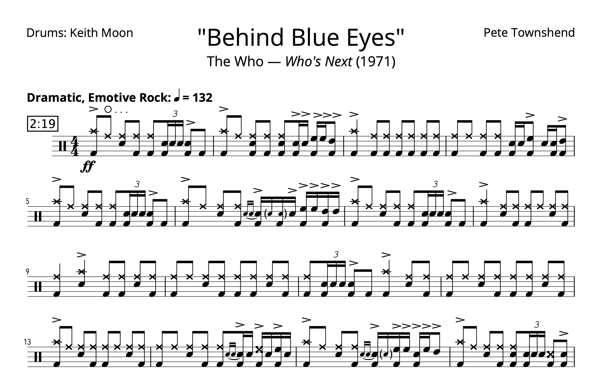It’s finally time for some Keith Moon, the man who got me into drumming. I think Live at Leeds is one of the most important albums for any drummer to listen to, myself especially. I expect that one of these days I’ll take a look at the record; I’m even tempted to do a full note-for-note transcription of it…
But today I have “Behind Blue Eyes”, off of Who’s Next. Read More . . .
Transcription: “The Price” — David Garibaldi with Tower of Power
Posted on August 23, 2020
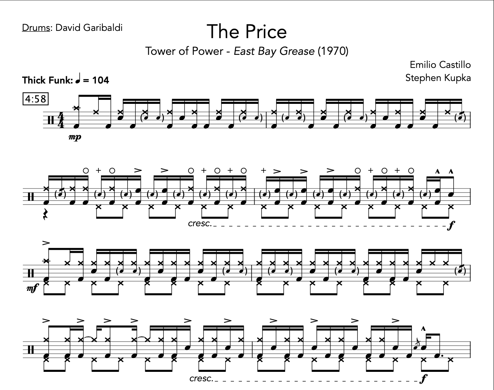About four years ago, David Garibaldi released a collection of sheet music, transcriptions he made himself to show off his playing with Tower of Power. I really like it when drummers take a look at their own playing, it’s the best look you’ll probably get at their work. I have the book myself, and it’s a great look at some very busy, dense/harmonic funk drumming. Garibaldi has some nutty drum parts. Read More . . .
Transcription: “Odessa” — Navene Koperweis with Animals as Leaders
Posted on August 16, 2020
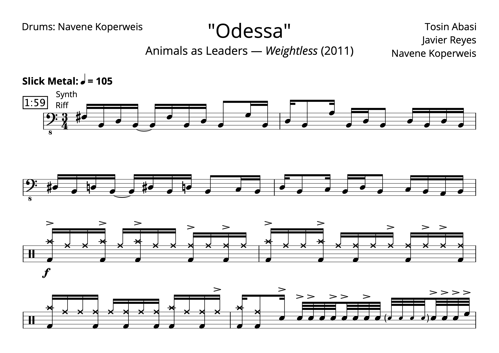Today we’re looking at some Animals as Leaders.
I’m analyzing a bit of a deep cut, from their oft-forgotten second album Weightless (2011). I wasn’t tuned into Animals as Leaders when it came out, and while I suspect it got the attention it deserves when it was first released, it seems to be overlooked now. Read More . . .
Transcription: “Aja” — Steve Gadd with Steely Dan
Posted on August 9, 2020
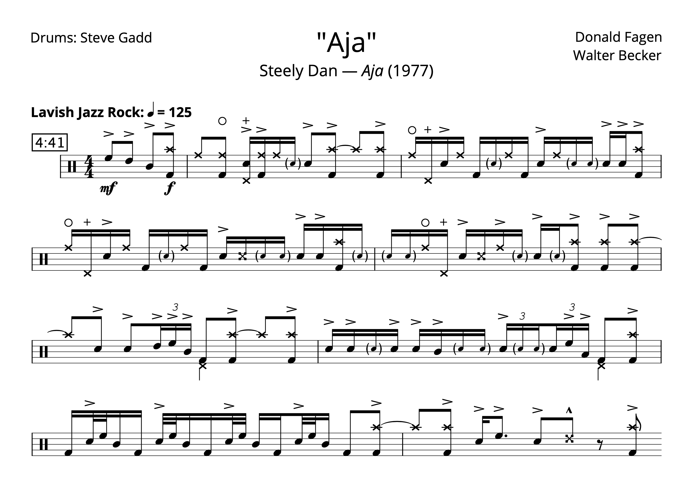This week, I’m sharing my interpretation of a drumming classic: “Aja” by Steely Dan, with Steve Gadd on drums. I couldn’t gush over this whole record enough, like many drummers and musicians have. But in all seriousness, Aja is one of the most important albums for me as a drummer, and Steve’s solo is one of those moments that totally changes the way you look at the instrument. Read More . . .
Transcription: “Little Wing” — Mitch Mitchell with Jimi Hendrix
Posted on August 2, 2020
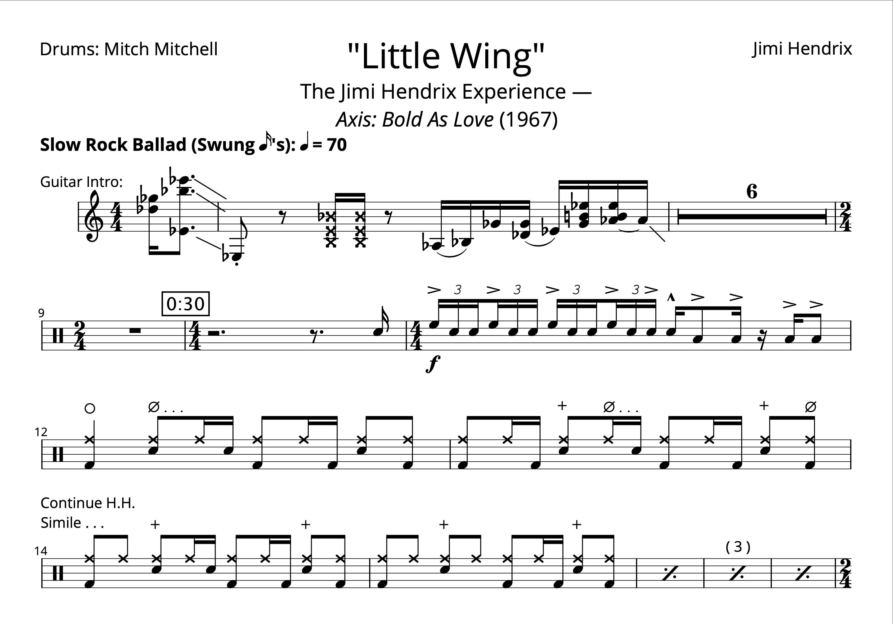Coming at you this week with a full song transcription: “Little Wing” by Jimi Hendrix.
I really got into Hendrix during the spring semester of my senior year in high school, and as I dove into Mitch’s playing, I poked around online for some drum sheet music. This was back when I assumed the average drummer on the internet knew what they were doing when it came to transcribing (or really when it came to anything). Read More . . .
Transcription: “Good Times Bad Times” — John Bonham with Led Zeppelin
Posted on July 26, 2020
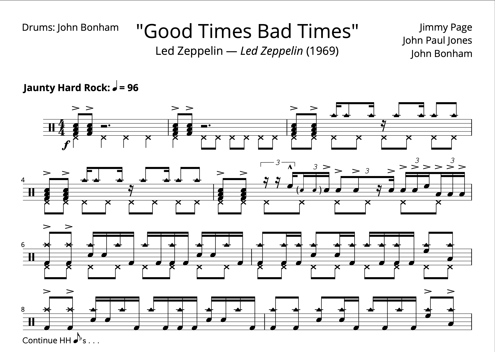Welcome to the blog! I have a lot of things to share on my site, and I’ll kick things off with sheet music for the classic “Good Times Bad Times”. Most of the really famous licks are pretty well known, but since it’s such a revered tune I took a detailed look. I don’t have a lot of full-length transcriptions, but with songs like this that are under 3 minutes, it’s not too difficult. Read More . . .